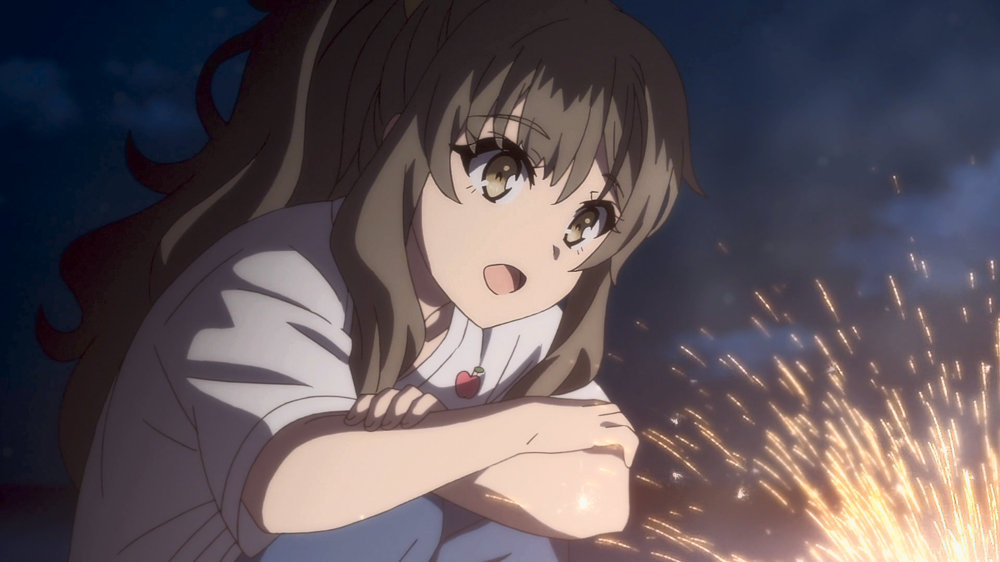
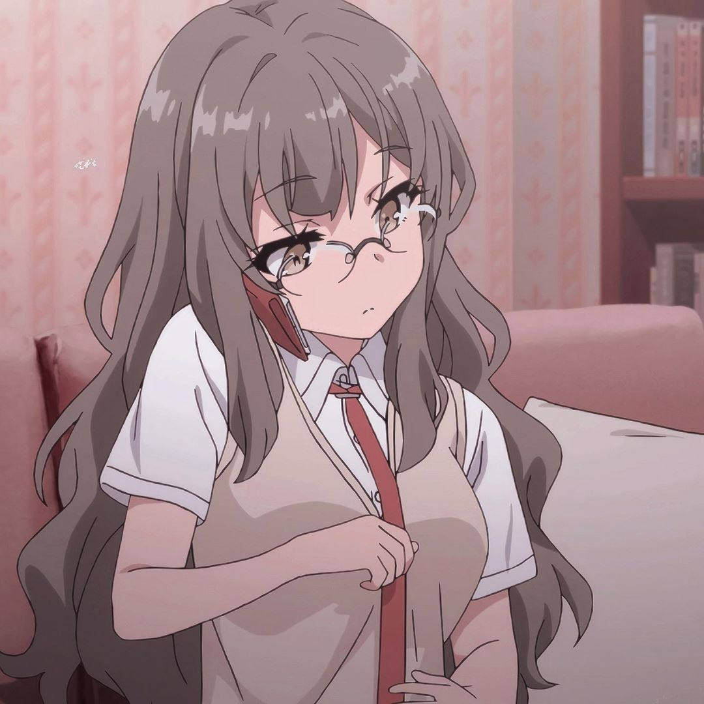

Rio Futaba (双葉 理央) es una de los personajes principales de Seishun Buta Yarō, ella es estudiante de segundo año de la Preparatoria Minegahara.
Ella había estado en la misma clase que Sakuta y Yuuma durante su primer año y es la única miembro del Club de Ciencias.
Como resultado de su inseguridad sobre su cuerpo, Rio se había dividido en dos versiones de sí misma el 30 de julio; una que ansiaba atención y otra
que odiaba el hecho de que su cuerpo fuera usado para obtener esa atención. Después de que ambas versiones pudieron reconocer y controlar sus propios
sentimientos, Rio volvió a ser una única persona.

Rio es una chica estoica y contundente que posee conocimientos sustanciales en ciencias, incluidas la química y la física cuántica. Antes de experimentarlo ella misma, no estaba dispuesta a creer la existencia del síndrome de la pubertad, sin embargo, reconoció el fenómeno anormal que induce y los conecta con varias teorías y principios científicos. A pesar de su naturaleza estoica, Rio también muestra varias emociones como el amor, el afecto hacia Yuuma y la ansiedad. Se da a entender que Rio ha experimentado una forma de negligencia, como se muestra cuando Sakuta visita su casa y le dice que sus padres suelen estar en el extranjero debido al trabajo. Además, debido a que no tiene hermanos, se demuestra que elige estar sola ya que de esa manera esta en su zona de confort la cual desarrolló de mala gana gracias a su infancia solitaria. Aun así, esa soledad es lo que le dio el coraje para acercarse a Sakuta cuando estaban en la misma clase durante su primer año.
